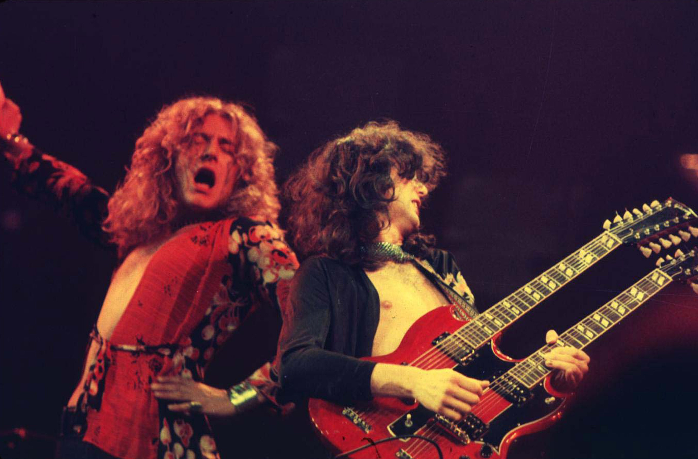

Aerosmith es una banda estadounidense de hard rock.123 También conocidos como "Los chicos malos de Boston", o "Toxic Twins", apelativo por el que se conoce a sus dos líderes por su histórica adicción a las drogas.4 Su sonido agresivamente rítmico tiene raíces en el blues1 y además contribuyó a establecer el sonido del hard rock y Pop rock entre los años 1981 y 1990.3567 La banda se fundó en Boston, Massachusetts, en 1970.8 El guitarrista Joe Perry y el bajista Tom Hamilton originalmente pertenecían a una banda llamada Jam Band, posteriormente se integraron el cantante Steven Tyler, el baterista Joey Kramer, y el guitarrista Ray Tabano, y formaron Aerosmith. En 1971, Tabano sería reemplazado por Brad Whitford, y a partir de ese momento el grupo comenzaría a ser conocido en Boston.

Led Zeppelin fue un grupo británico de hard rock fundado en Londres en 1968 por el guitarrista Jimmy Page, quien había pertenecido a The Yardbirds.
La banda estuvo integrada por Jimmy Page en la guitarra, John Paul Jones como bajista y tecladista, el vocalista Robert Plant y John Bonham a la
batería (que había coincidido con Plant en The Band of Joy).
Led Zeppelin presentó elementos de un amplio espectro de influencias y géneros, como el blues, el rock and roll, el soul, la música celta,
la música india, el folk, reggae y el country, siendo uno de los grupos seminales para el surgimiento del heavy metal.2

Guns N' Roses es una banda estadounidense de hard rock formada en Hollywood en la zona de Sunset Strip, alrededor de Santa Mónica,
en el área metropolitana de Los Ángeles, California en 1985. El grupo fue fundado por el vocalista Axl Rose y el guitarrista Izzy Stradlin.6
Es una de las bandas de rock más exitosas de todos los tiempos, habiendo vendido más de ciento cincuenta millones de discos, es considerada ícono
global de la música y forma parte del prestigioso Salón de la Fama del Rock and Roll. Asimismo, la banda es uno de los números artísticos con más
galardones, legado y repercusión mundial hasta la fecha. También Guns N' Roses es considerada una de las bandas más influyentes de la historia
debido a su gran legado musical.1789